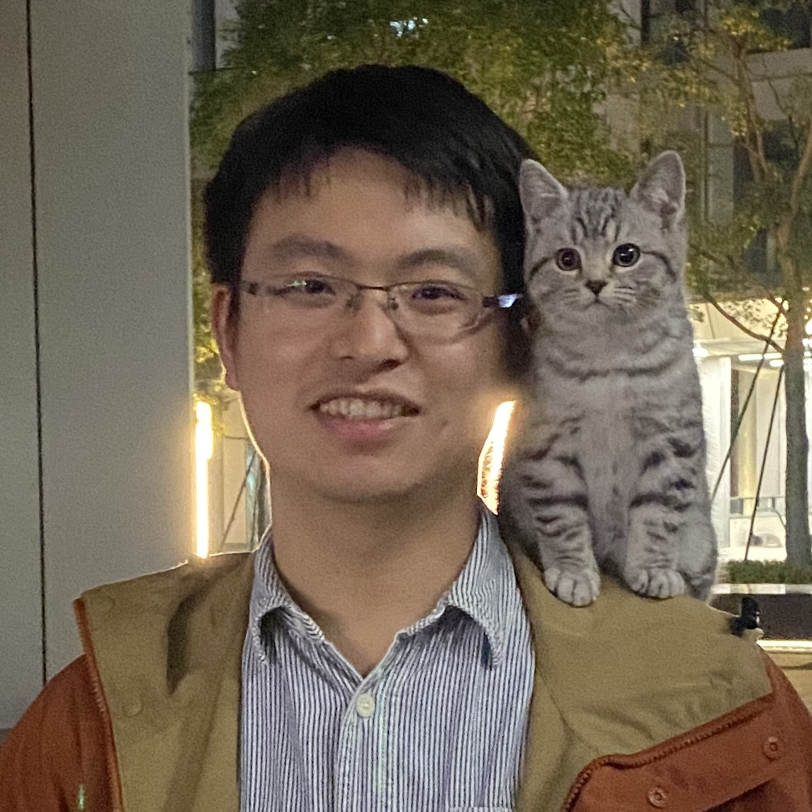
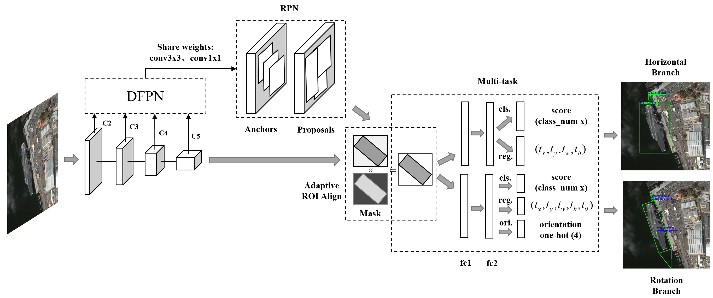
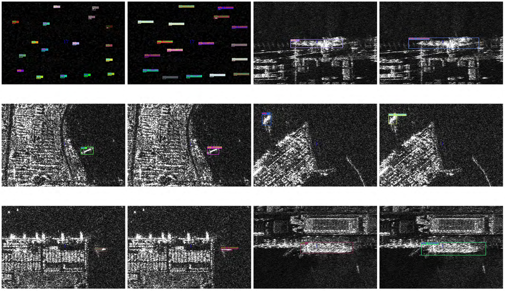

|  |
Xue Yang
Ph.D. Student at
ThinkLab
Department of Computer Science and Engineering, |
Biography
Xue Yang is now a Ph.D. student in Wu Honor Class, Department of Computer Science and Engineering, Shanghai Jiao Tong University starting from Autumn 2019. His research advisor is Prof. Junchi Yan.
Xue Yang received the B. E. degree from School of Information Science and Engineering, Central South University, Hunan, China, in 2016. He received the M. S. degree from School of Electronic, Electrical and Communication Engineering, University of Chinese Academy of Sciences (Institute of Electrics, Chinese Academy of Sciences), Beijing, China, in 2019. Previously, he was a research intern in Megvii Detection Team, Beijing, China, in 2019.
Xue Yang's research interests include deep learning and computer vision, with a focus on generic object detection, aerial imagery detection, and scene text detection.
News
Publications
Conference
 |
Arbitrary-Oriented Object Detection with Circular Smooth Label Xue Yang, Junchi Yan. In Proceedings of the European Conference on Computer Vision (ECCV2020, CCF-B), Glasgow, Scotland, UK, 2020 |
 |
SCRDet: Towards More Robust Detection for Small, Cluttered and Rotated Objects Xue Yang, Jirui Yang, Junchi Yan, Yue Zhang, Tengfei Zhang, Zhi Guo, Sun Xian, Kun Fu. In Proceedings of the IEEE International Conference on Computer Vision (ICCV2019, CCF-A), Seoul, Korea, 2019 |
 |
Rethinking Classification and Localization for Cascade R-CNN Ang Li, Xue Yang, Chongyang Zhang. In Proceedings of the 30th British Machine Vision Conference (BMVC2019, CCF-C), Cardiff, Wales, UK, 2019 |
Journal
|  |
Position Detection and Direction Prediction for Arbitrary-Oriented Ships via Multitask Rotation Region Convolutional Neural Network Xue Yang, Hao Sun, Xian Sun, Menglong Yan, Zhi Guo, Kun Fu. In Access, 2018 |
|  |
A Densely Connected End-to-End Neural Network for Multiscale and Multiscene SAR Ship Detection Jiao Jiao, Yue Zhang, Hao Sun, Xue Yang, Xun Gao, Wen Hong, Kun Fu, Xian Sun. In Access, 2018 |
 |
Automatic Ship Detection in Remote Sensing Images from Google Earth of Complex Scenes Based on Multiscale Rotation Dense Feature Pyramid Networks (ESI Highly Cited Papers) Xue Yang, Hao Sun, Kun Fu, Jirui Yang, Xian Sun, Menglong Yan, Zhi Guo. In Remote Sensing, 2018 |
Preprints
 |
SCRDet++: Detecting Small, Cluttered and Rotated Objects via Instance-Level Feature Denoising and Rotation Loss Smoothing Xue Yang, Junchi Yan, Xiaokang Yang, Jin Tang, Wenlong Liao, Tao He. dataset: S2TLD project page |
 |
Learning Modulated Loss for Rotated Object Detection Wen Qian, Xue Yang, Silong Peng, Yue Guo, Junchi Yan. |
 |
R3Det: Refined Single-Stage Detector with Feature Refinement for Rotating Object Xue Yang, Qingqing Liu, Junchi Yan, Ang Li, Zhiqiang Zhang, Gang Yu. |